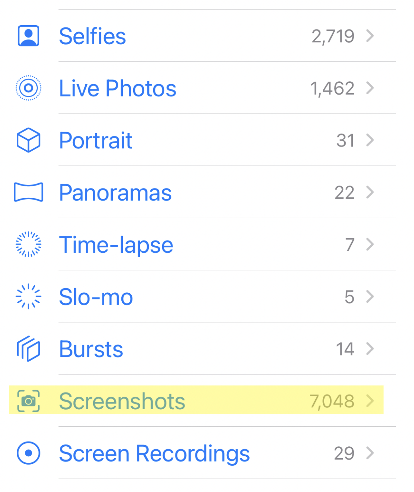

I am working on projects concerning machine learning + non-human intelligence(s), protocols + networks, and new genres of interaction for humans with these technologies.
You can read on for a slightly longer bio + some questions on my mind.
You can read on for a slightly longer bio + some questions on my mind.
testing
testing
testing
testing
Some questions on my mind:
testing
testing
testing
umwelt protocols [04.02.2023]
testing
testing
testing
identity traces [03.01.2023]
tl;dr - I decided that the best way to represent my identity (as it is produced by existing on the internet / in networks) is to have a large language model analyze and describe the thousands of screenshots I take on my phone every year. The text at the bottom is the output of that process.When I was creating this website I thought about how to present myself despite the ready-mades the genre of the personal website typically affords, which I suspect for others can feel disingenuous, and for th writer, a bit strange but not a strange.
However, it is hard to be earnest about identity when how we understand it today seems, in some ways, out of step with the identity-producing technological milieu of our times. What exactly do I mean by this?
Well, as a heuristic, identity has typically been understood in terms of ready-made, demographic-esque qualifiers: socioeconomic status, cultural associations, education level and associations, and so on. The stuff that goes on your CV. Moreover, these qualifiers are usually locked in place, and used to compose a sort of matrix that helps others make sense of someone before really knowing them.
This rendering of identity is a particularly 20th century way of coming to know someone, of making world together.
I find it hard to believe that these containers are sufficient to convey identity as it is configured today. It is more accurate to say: who I am or could be is constantly in flux, in particular because the experiences that configure and produce my identity frequently occur in explicitly networked venues: Twitter, Instagram, Substack, group chats, Discord, subreddits, WhatsApp, etc.
Think of it this way: what is a more honest identity marker, your social media “profile,” or the “feed” that you consume everyday? Is it about demographics and ready-made identifiers? Or data, algorithms, and a constantly modulating stream of media, connections, and encounters?
I think the feed is truer than the profile. As biologist Jakob Johann von Uexküll said: “Every subject spins out, like the spider’s threads, its relations to certain qualities of things and weaves them into a solid web, which carries its existence.”
So the question then is: how to communicate a feed? What do we do about our algorithms being piece-meal, scattered across platforms? How do I locate and communicate the “meta-feed” that is a networked identity?
When thinking about this question, I had one possible entry point:

I. Take. A. Shit ton. Of. Screenshots. Upwards of 20 a day. I screenshot things that are interesting, funny, frightening, beautiful, etc. I’m not very discriminating in this regard. I just like the record-keeping/diary nature of the screenshot folder. These screenshots are not the “meta-feed,” but almost the trace of it, the “meta-feed” in a blur…
So I created a folder where I upload these screenshots. I then perform OCR on all of the images in the folder and produce a master document that contains all of the text in those screenshots. Finally, I crafted a careful prompt so that gpt-3.5 can extract all of the relevant themes/ideas in that corpus of screenshot-text and communicate them in a stylized way. Every few days, I update the folder and run the script.
The output is what you see scrolling at the bottom of this website, an approximation of the meta-feed, the spider’s web, the trace of my networked identity.
If it is confusing and cryptic: tell me about it. That's the spider’s threads.
lines of flight [06.30.2022]
Lines of Flight is an actively listening room where a stack of sensors, software, machine learning plugins, and cameras take in the subtle movements of bodies and the environmental conditions to form a kind of distributed instrument.
We suggest co-creativity between human and non-human agents, wherein neither human nor machine is fully reducible to itself anymore.
By emphasizing relational processes over output, listening becomes the primary relation between the human operator and artificial agent. This performance tries to move beyond a mode of creation that enlists other intelligences as mere tools.
The performance is not instantiating the end or ideal mode of this relationship. Rather, we are using the tools at our disposal with all their limitations in order to expose the embryonic agency of ML systems: we tease out how these ML stacks become unidentical to their machinic origins. In short, we make sound of a technology's line of flight.
is it...dead??? [04.02.2020]
In March and April of 2020 I made an ambient/sound collage/electronic/hip-hop record that uses field recordings captured in the first two weeks of March as London was approaching its first Covid lockdown.Check it out here: Is It... Dead?